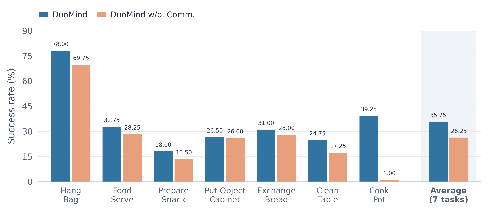

Inter-agent Communication Ablation
To further study the effect of the shared messages, we conduct an ablation using DuoMind with π0.5 but without inter-agent communication.
The results show that the orchestrated π0.5 system consistently outperforms the non-communicating π0.5 system across all seven RoboPoly tasks. Without inter-agent communication, we observe more frequent conflicts and asynchronous behaviors between the two robots.
